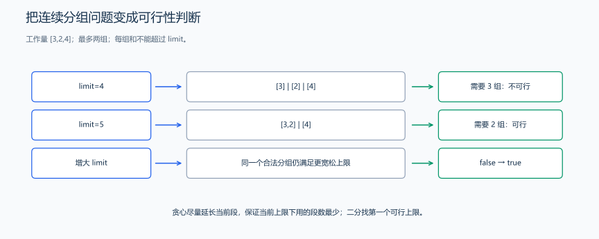
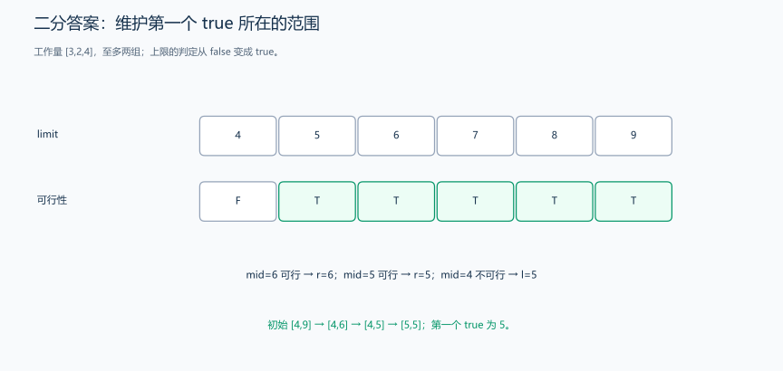

（七） 把最优化改成可行性判断
有时直接求“最小值”很难，但判断候选值是否足够更容易。先写：
\[ check(x)=\text{是否存在一个满足所有限制、目标值不超过 x 的方案} \]
如果 check(x) 从假到真只切换一次，就可以寻找第一个可行的 x。如果题目要最大可行值，并且从真到假只切换一次，则寻找最后一个可行值。
1. 完整示例：最小工作量上限
题目原文（自拟）： 有工作量依次为 [3, 2, 4] 的三个任务。要按原顺序分成至多 2 个连续非空组，使最大组内工作量尽量小。求这个最小值。
分析推导： 给定上限 limit，从左到右尽量向当前组添加任务；再添加会超过上限时，就开新组。工作量非负，因此当前组多容纳一个任务不会增加所需组数。
先看分组判定为什么正确，再看上限增大后发生什么。
对于固定上限，贪心把第一组取到“再加一个就超限”为止。因此，任何合法划分的第一组都不能比它更靠后结束。贪心用相同组数覆盖了更长前缀后，下一组又尽量向后延伸；工作量非负，从更靠后的起点接到另一划分的组末端，不会使组内和增大。按组数归纳，贪心不会比其他合法划分需要更多组。因此，用它算出的组数是否超过 2，确实能判断上限是否可行。
单调性来自同一个方案的复用：若某个划分的每组和都不超过 limit，把上限放大后，这个划分仍然合法。于是可行状态只会从假变真，不会再变回假。
| 上限 | 从左到右得到的组 | 是否至多两组 |
|---|---|---|
| 4 | [3]、[2]、[4] |
否 |
| 5 | [3,2]、[4] |
是 |
| 6 | [3,2]、[4] |
是 |
| 9 | [3,2,4] |
是 |
搜索范围为什么是 [max(work), sum(work)]？最大任务所在的组包含这个任务，所以答案至少为最大元素；把所有任务放在一组即可达到总和，所以总和一定是可行上界。每个任务贡献非负工作量，所以组内再加入一个任务，累计工作量就会增加或保持不变；这正是上面按顺序扩展分组的依据。

[3,2,4] 在上限 4 时需要三组，上限 5 时只需两组；上限继续增大后，已有的两组仍能使用。因此，要找的就是第一个能分成至多两组的上限。

以 [3,2,4] 的分组判定展示第一个 true 的搜索边界。
#include <algorithm>
#include <iostream>
#include <numeric>
#include <vector>
using namespace std;
bool feasible(const vector<int> &work, long long limit, int maxGroups) {
int groups = 1;
long long current = 0;
for (int task : work) {
if (task > limit) {
return false; // 一个任务已经超过上限，怎样分组都不行
}
if (current + task > limit) {
++groups; // 当前组放不下，开新组
current = task;
} else {
current += task;
}
}
return groups <= maxGroups;
}
int main() {
vector<int> work{3, 2, 4};
long long left = *max_element(work.begin(), work.end());
long long right = accumulate(work.begin(), work.end(), 0LL);
// 上限越大越容易分组；搜索第一个可行的上限。
while (left < right) {
long long mid = left + (right - left) / 2;
if (feasible(work, mid, 2)) {
right = mid;
} else {
left = mid + 1;
}
}
cout << left << '\n'; // 5，分成 [3, 2] 和 [4]
}代码解释： limit = 4 时要分三组，失败；limit = 5 时可以分两组，成功。如果上限为 5 的方案可行，更大的上限也能使用这个方案，所以真假具有单调性。
这里先学习“把目标改成判断”的过程；二分更新边界的详细原理见后面的算法章节。若任务数为 n、工作量总和为 S，这个方法的时间为 \(O(n\log(S+1))\)，额外空间为 \(O(1)\)，不计输入数组。